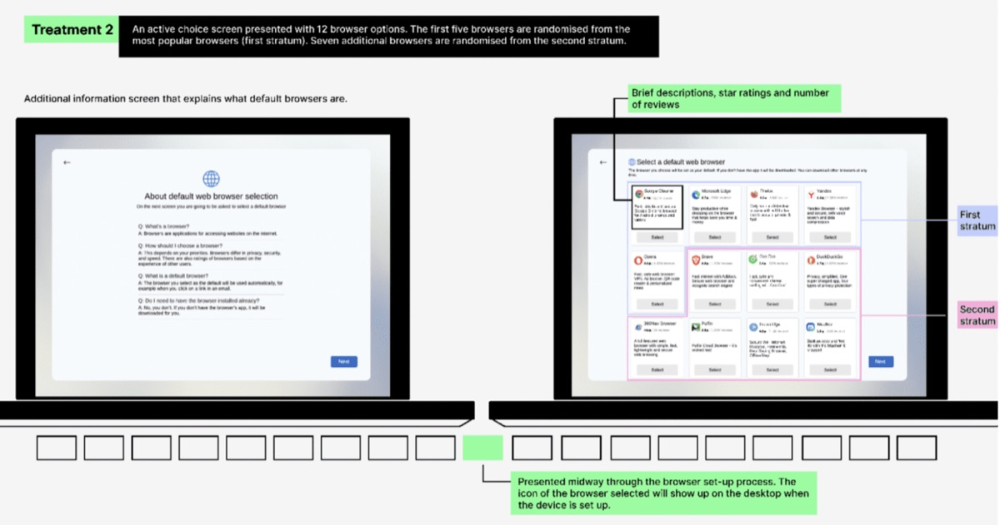
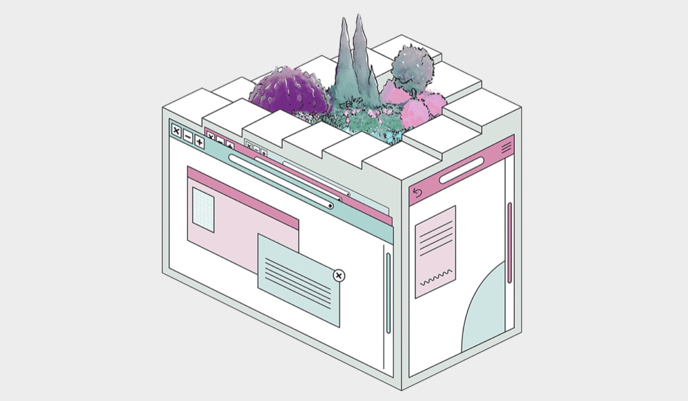
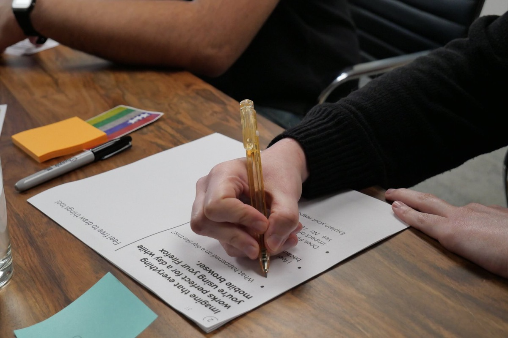
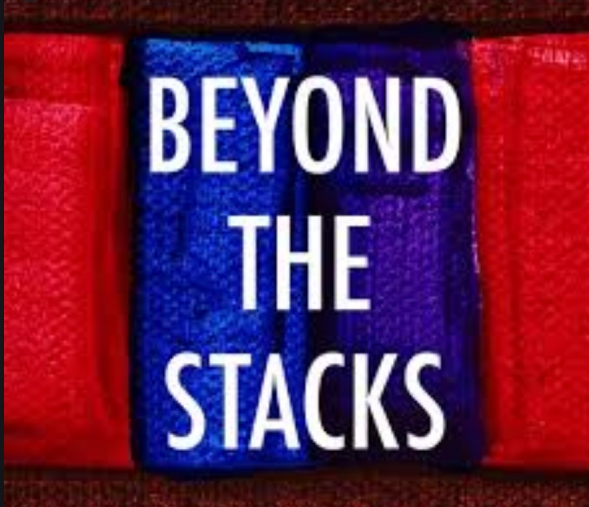
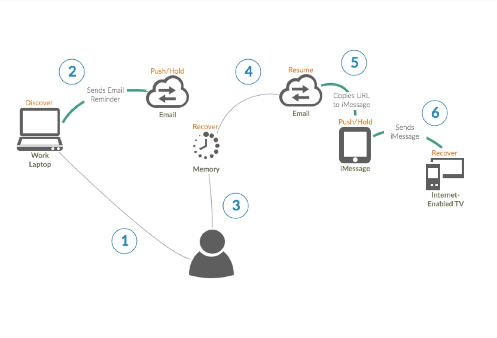
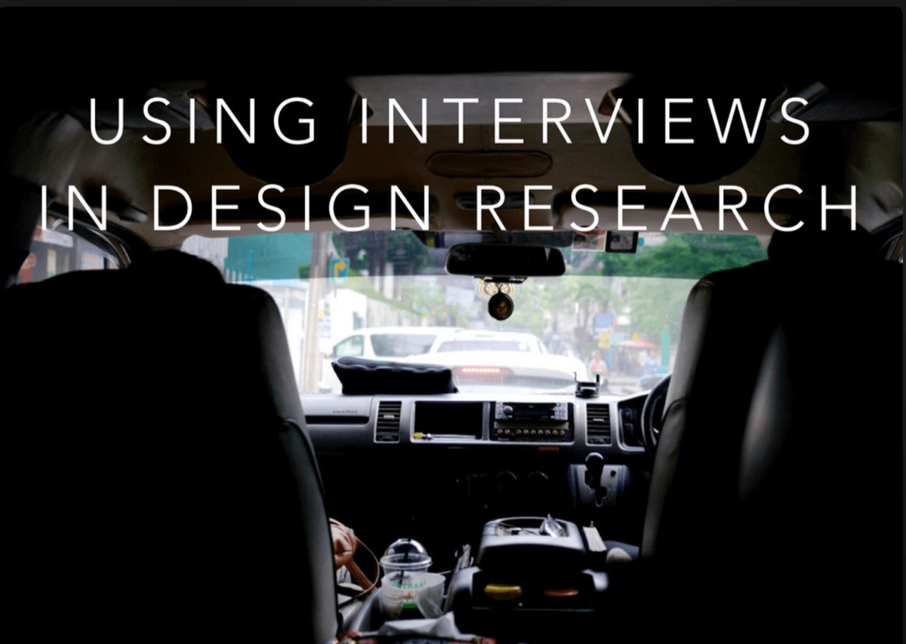
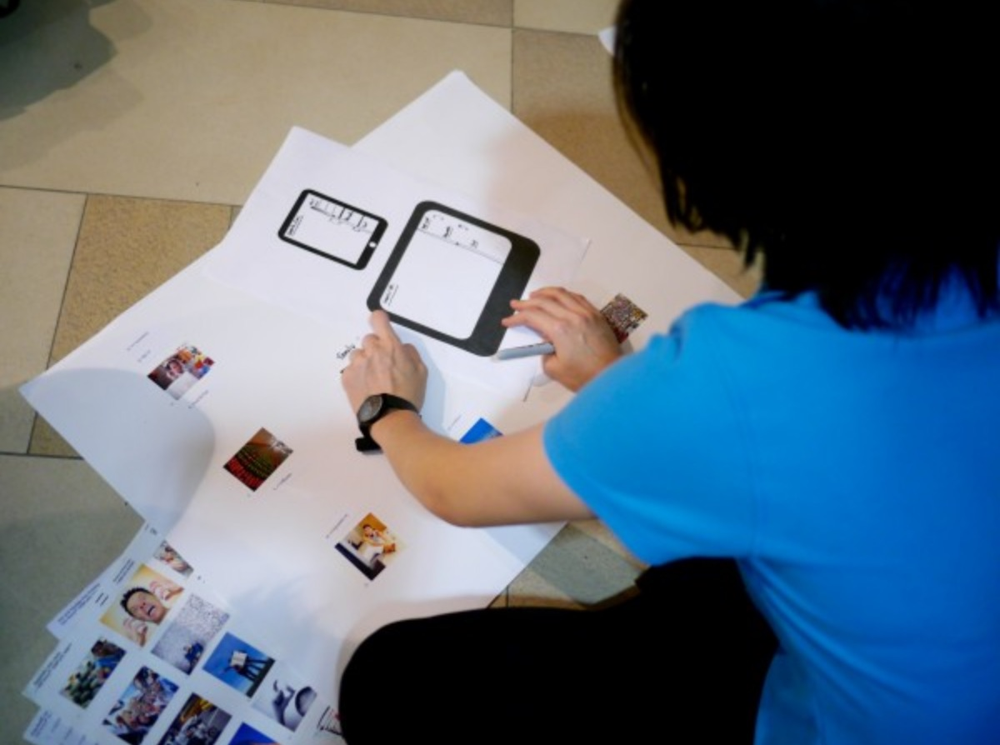
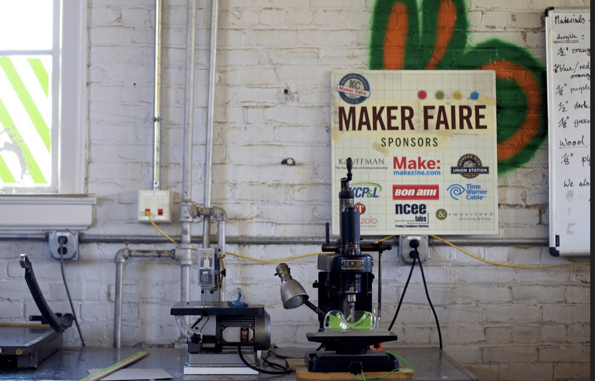
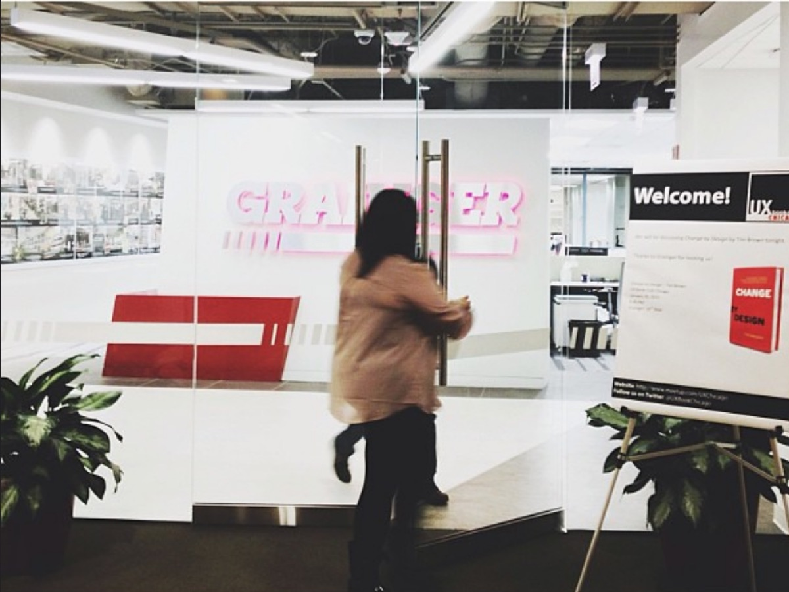

Writing
- DMA and Beyond Conference: Bridging the Gap Between Regulatory Intent and User Experience
 RemedyFest 2024: Remedies & Browser Choice
RemedyFest 2024: Remedies & Browser Choice
Can Browser Choice Screens Be Effective? Experimental Analysis of the Impact of Their Design, Content and Placement Beyond Choice Screens: Exploring Browser Choice Design Interventions
Beyond Choice Screens: Exploring Browser Choice Design Interventions
Five Walled Gardens: Why Browsers Are Essential to the Internet and How Operating Systems Are Holding Them Back
Who Gets to Define Success? Listening to Stories of How People Value Firefox to Redefine Metrics User Perceived Performance: Measuring Perceived Performance to Prioritize Product Work
User Perceived Performance: Measuring Perceived Performance to Prioritize Product Work Envisioning Our Information Future
Envisioning Our Information Future- Farewell to the Chicago UX Book Club
 In Praise of Theory in Design Research: How Levi-Strauss Redefined Workflow
In Praise of Theory in Design Research: How Levi-Strauss Redefined Workflow- Firefox Workflow User Research in Germany
- Free Templates to Keep Your Design Sprint on Track

Beyond the Stacks: Podcast Interview- Task Continuity: Taiwan & Japan

Multi-Device Task Continuity
Workshop: Interviews in Design Research- Multi-Device Task Continuity
- Save, Share, Revisit
- The Chicago Reader’s 2014 People Issue
 Mobile Operating System Research in Northern India
Mobile Operating System Research in Northern India
Firefox in Thailand & Indonesia
University of Illinois Profile- Designing for Our Users, Not for Ourselves
 Firefox Research in Thailand
Firefox Research in Thailand
Crain’s Tech 50 Firefox Research in Southeast Asia
Firefox Research in Southeast Asia Library School
Library School